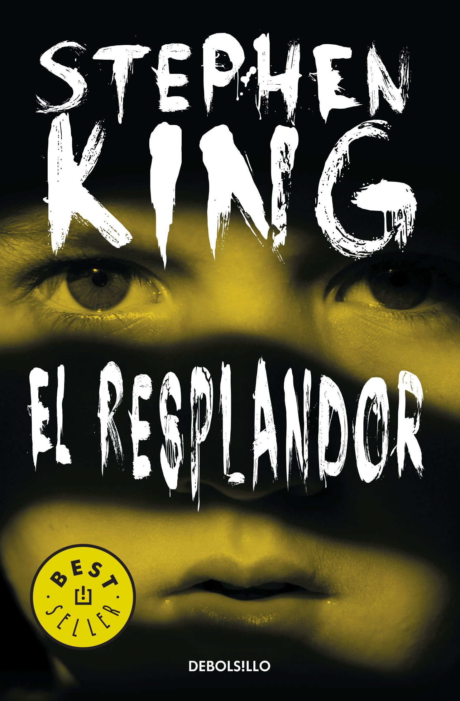
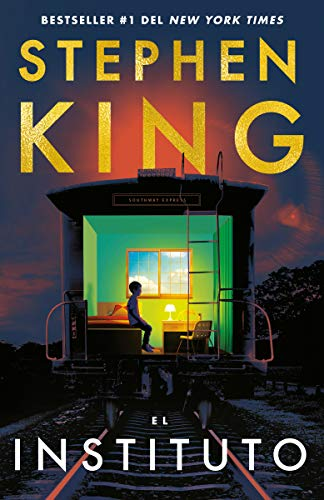
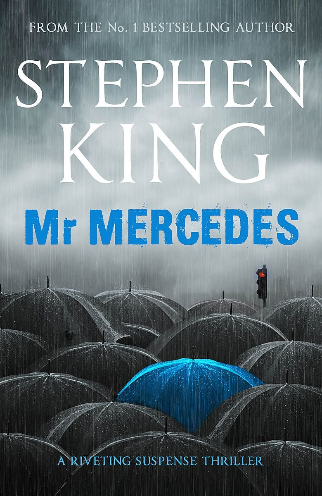
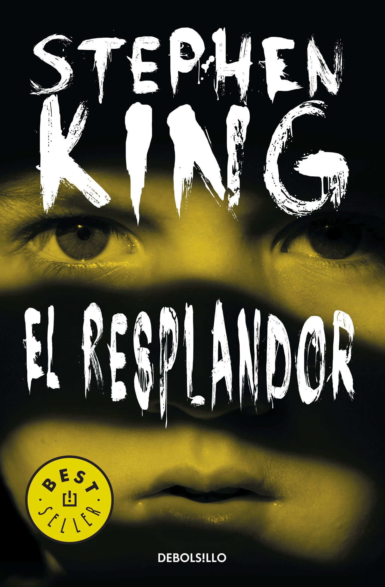
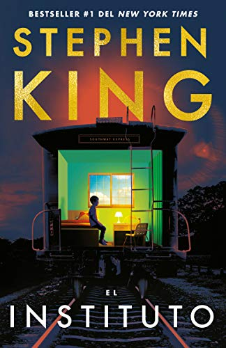
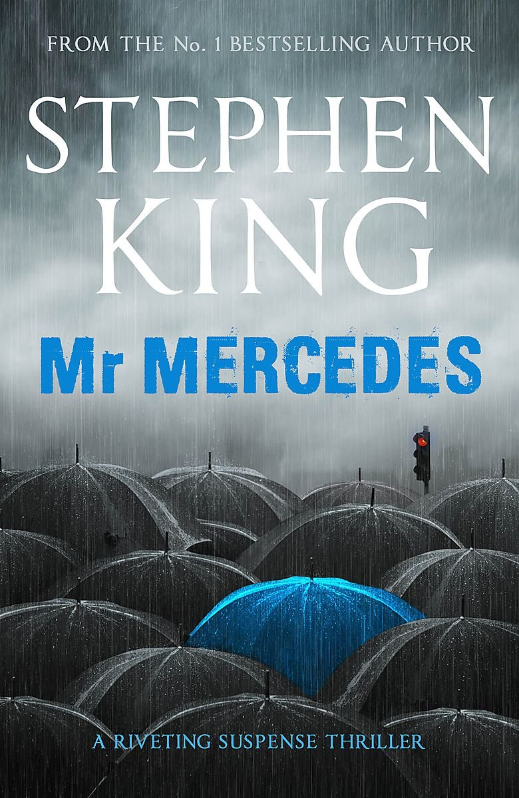

Personajes - Los perdedores
Otros Libros
 





Detalles importantes:
Acontecimientos
El desarrollo de los acontecimientos en el libro está entrelazado entre el pasado y el presente, entre la historia de niños que conocieron a un payaso y la historia de adultos que se vieron obligados a regresar a la ciudad de Derry y encontrarse con el mal de frente.
Transformaciones de PennyWise
En el libro, Pennywise se convierte en monstruos típicos de diferentes películas de culto de principios del siglo XX. Ben teme a la momia, entre otras transformaciones; Mike, a un pájaro gigante; y Richie había visto demasiadas películas de terror de hombres lobo.
Libro vs Pelicula
En el libro, podemos encontrar varios capítulos dedicados a describir los terribles sucesos que Pennywise protagonizó en Derry cuando los integrantes del “Club de Perdedores” ni siquiera habían nacido. Por desgracia, esta parte no era posible mostrarla en el cine